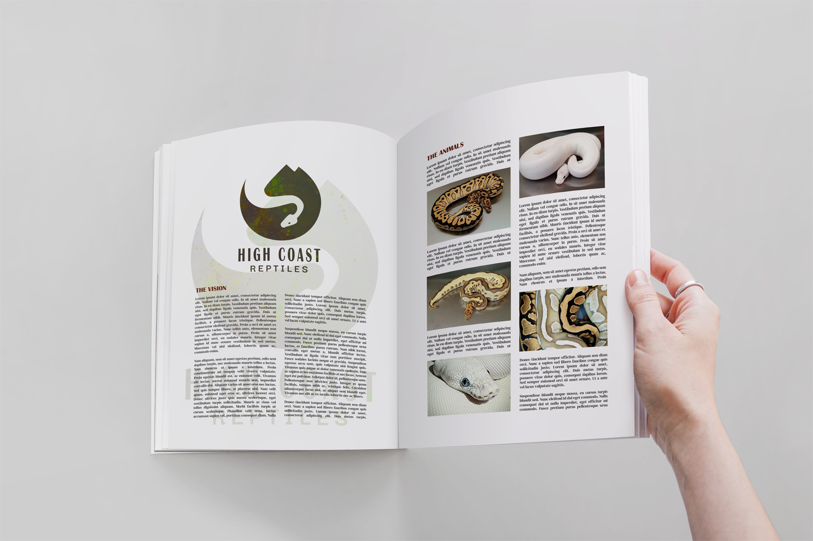
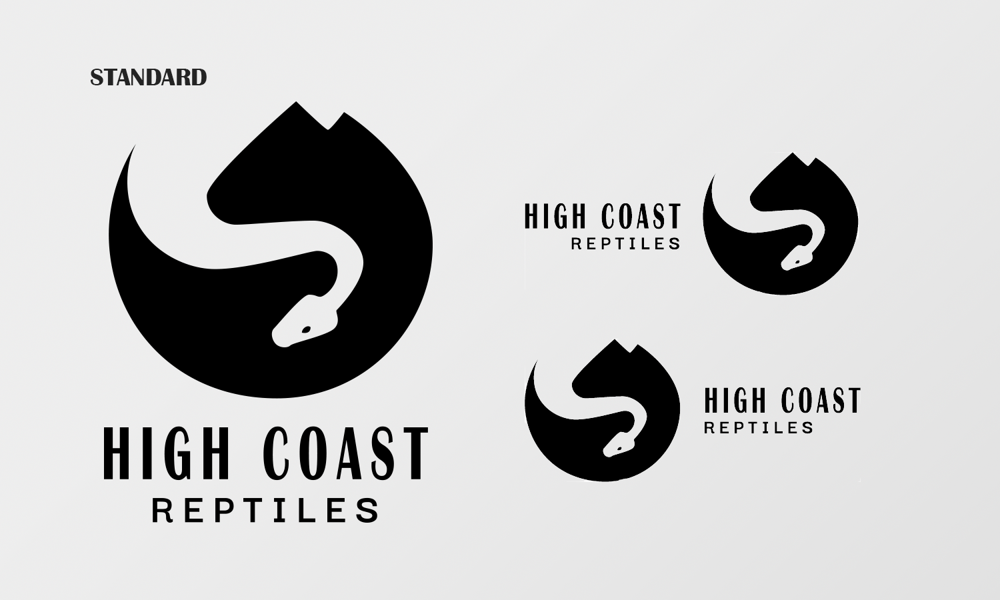

Logotyp utformad för ett företag som bedriver uppfödning av kungspyton. Företaget är baserat i höga kusten och ville att loggan skulle reflektera detta. Företaget har kunder i andra länder och bedriver främst marknadsföring på Instagram så den skulle även vara avskalad och kunna fungera på olika plattformar.
 Arbetet med logotypen har skett i etapper, där jag skissat på ett antal idéer men sedan endast gått vidare med ett par, och då var det denna som i slutändan valdes ut. Skisserna reflekterar grundtanken att logotyp och text skulle kunna passa som bäst i runt format, men vid lite nya direktiv valdes textplaceringen som ses ovan. Inledande skisser var organiska utan tanke på former, men inför slutdesignen skapade jag guidelines med hjälp av cirklar för att säkerställa att den slutgiltiga loggan blev jämn.
Se alla projekt!